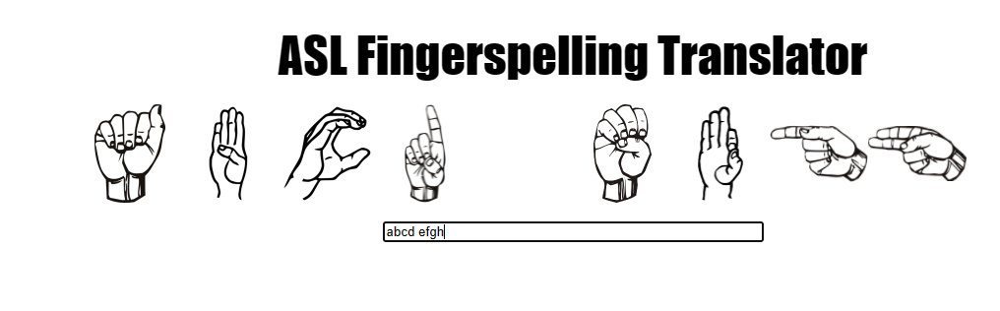
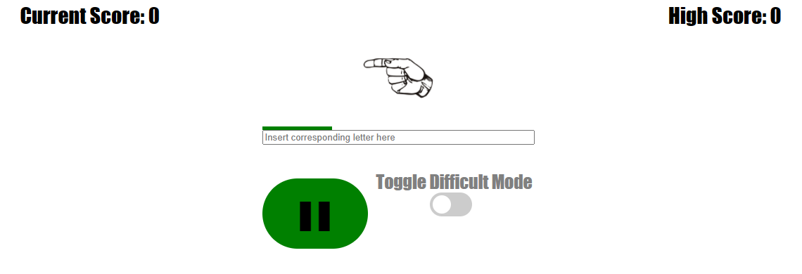
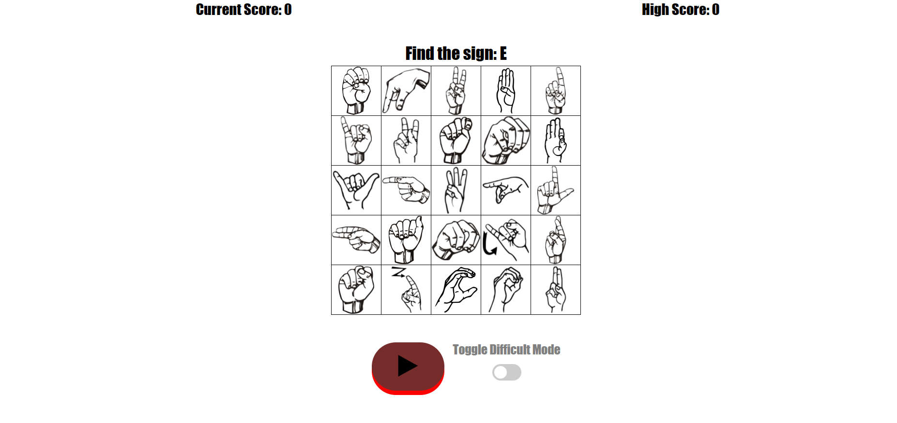

American Sign Language(ASL)
I love ASL and teaching in fun ways!
Fingerspell To Text Converter
This game simply translates your input, which is what ever you type into the input box, into actual ASL signs, so you can see how to fingerspell words, you can try your name for example. It works just like the alphabet, fingerspelling is a way of communicating alphabetically through signs.
Speed Game
In this game you are shown one sign each time, and you are meant to type in the correct letter or your guess in order to gain points. There is also an option for a more difficult game, however I do not recommend it until you are able to read the signs very fast.
Matrix Game
In this game you are given a letter, and you are meant to click the corresponding sign. This game can be a bit more challenging than the other two, especially at first, but practice makes perfect! There is also an option for a more difficult mode, but for this game, it is absolutely hard - Try it if you dare.